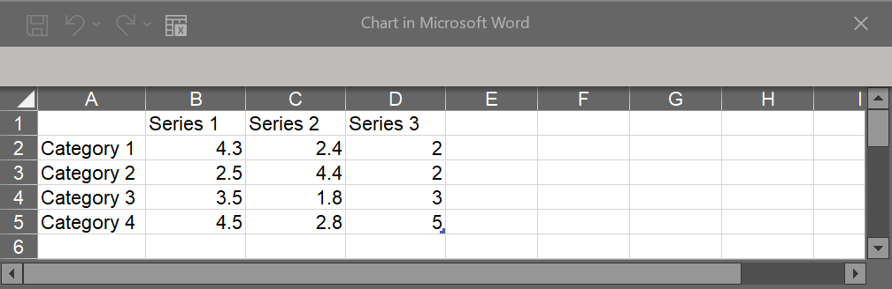
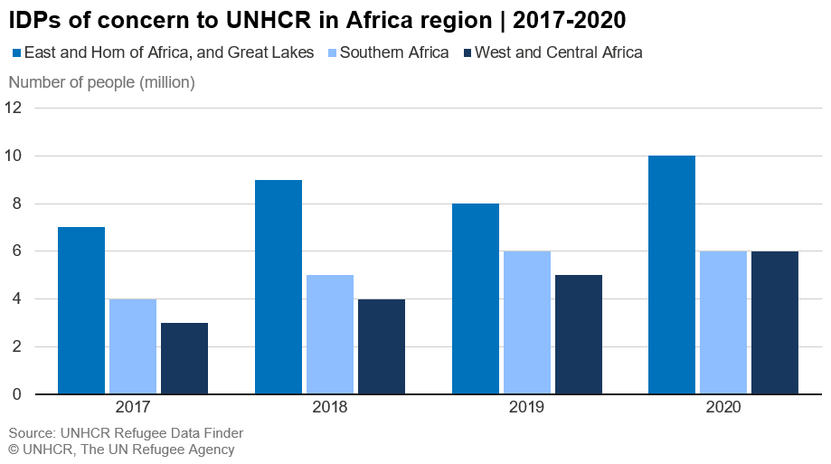
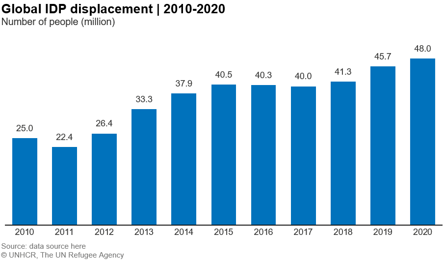

MS Office templates
MS Office chart templates are part of UNHCR brand compliant templates which can be installed through UNHCR Company Portal. With a few extra clicks, you can download the templates and stationery on your computer. Once you’ve completed these steps, the templates and stationery will always be available. Please follow the below steps.
Where can I find UNHCR brand compliant templates?
You can find detailed tutorials on how to adapt the templates on the UNHCR Intranet and Refugees Media.
To install the templates:
- Go to the Start menu and search for ‘Company Portal’
- Select ‘Company Portal’
- Within the Recently published Apps, select ‘UNHCR Branding Templates’, and click ‘Install’
- Once installation is complete, you will need to restart all Microsoft Office applications, including Word, Excel, PowerPoint and Outlook email.
How to use UNHCR Chart templates
- Open a new Word document. You’ll find the added templates under the Insert tab > Chart > Templates. You should see all the examples with the recommended UNHCR style.
- Choose the type of chart you would like to use for your data and click OK.
- A new chart with pre-styled chart elements is now inserted to the document. An Excel sheet containing the data associated with the chart will also open automatically.
- By default, the Excel sheet will show three columns (series) and four rows (categories) data set. Replace the standard with your own data set. If necessary (i.e. if your data set has more than three series and/or four categories), change the data range by dragging the right bottom corner of the blue line to match with the number of columns and rows in your data set. 
- Customize the default chart elements:
figure number ,title ,subtitle , anddata source , keeping in mind that Figure number and subtitle are optional and can be removed if not required. - Conduct a final check on layout and design e.g. left align the elements, adjust space between elements. 
Note:
Because of the default data set (three series and four categories), you need to pay attention when working on following charts:
- Column/bar charts: remove the legend when creating single column or bar charts. 
- Donut/pie charts: adjust the data range by removing default data series in columns C and D. When first inserted the default chart will look like the example below on the left. This is because only one series is needed for donut and pie charts. By removing two series your chart should transform into the example below on the right.
For technical support, contact Global Service Desk
For brand support email the brand team at globalbrand@unhcr.org
For chart template support email the Information Product Development and Analysis Unit at ipda@unhcr.org